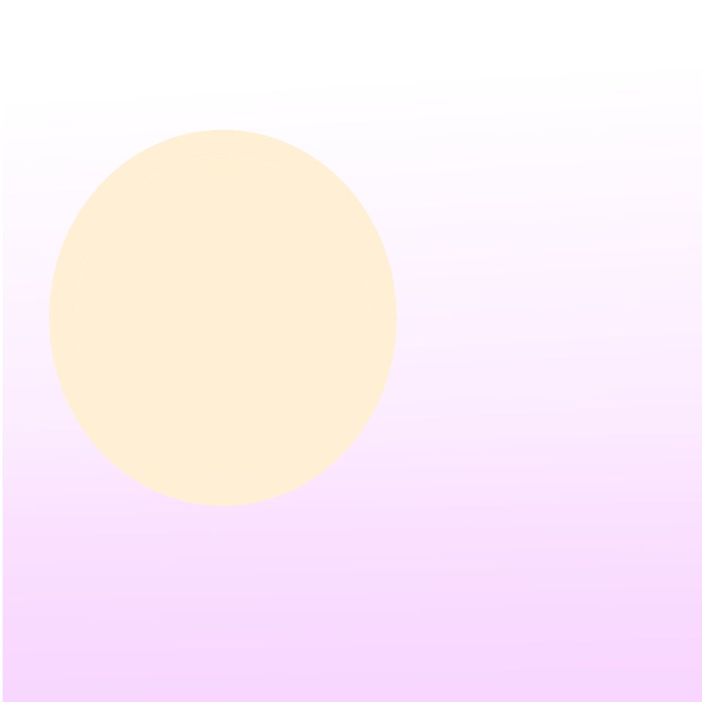

Sobre
Sou professora de tecnologia e programação com foco em aprendizado prático e criativo. Ensino desde desenvolvimento de aplicativos com Python (Kivy/KivyMD), Thunkable e React Native, até design 2D e 3D com Krita e Blender, além de animação digital.
Minha maior especialidade é o desenvolvimento de jogos, onde trabalho com ferramentas como Unity, Construct 3, Flowlab, Scratch, Roblox e Minecraft Education, ajudando os alunos a transformarem ideias em projetos reais.
Já tive experiências com diferentes públicos — desde jovens de 10 a 18 anos (meu foco principal), até idosos aprendendo o básico de tecnologia, além de atuar com ensino voluntário de lógica de programação para calouros na universidade.
Minhas aulas são guiadas pela prática, porque acredito que é fazendo que se aprende de verdade. Meu objetivo é simples: ajudar cada aluno a tirar suas ideias do papel, desenvolver seus próprios projetos e aprender programação de forma mais leve e acessível do que foi na minha época.